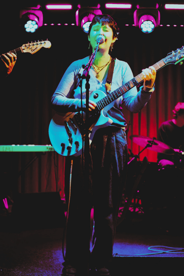

Marmalee is the musical project of Galway-born, Dublin-based artist Laoise Dunne. Raised in a family of musicians, Laoise began playing piano by ear as a child before earning her degree in music from Dublin City University in 2023.
Her versatile sound draws from an eclectic mix of influences—ranging from BjOrk to XTC—and spans across composing for short films to performing with the group Badger BhuI.
